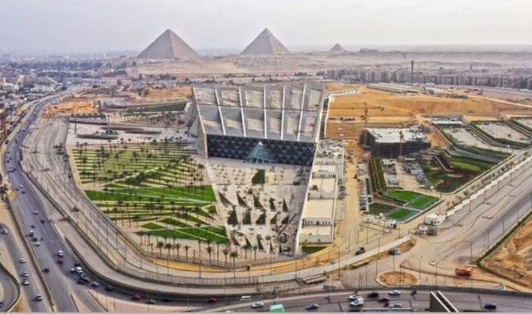
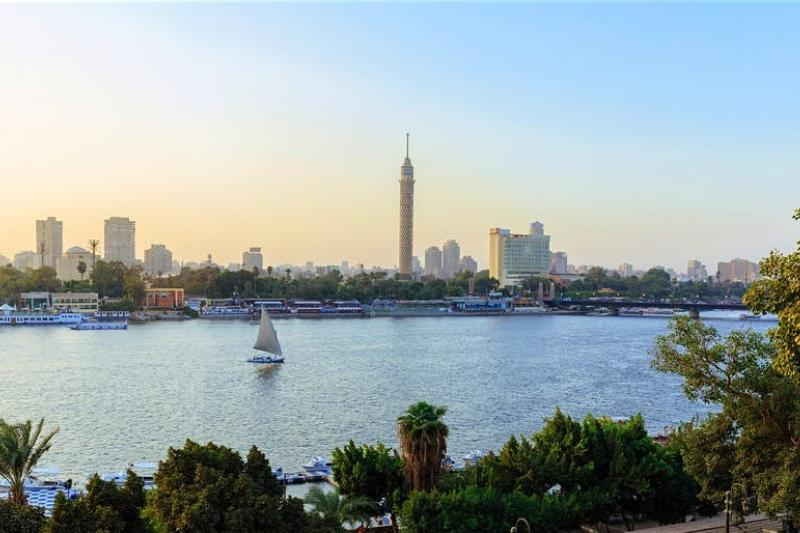
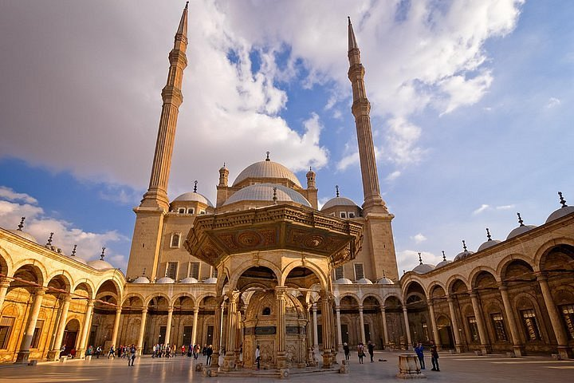
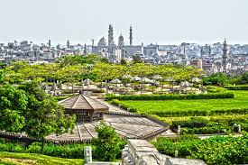

Le Caire est le site le plus fréquenté de l’Égypte, en raison de ses structures d’accueil,de son patrimoine urbain et de la proximité des grandes pyramides de Gizeh. Le Caire est l'une des villes les plus anciennes du monde, avec une histoire qui remonte à plus de mille ans. Elle est le berceau de la civilisation égyptienne et regorge de trésors historiques, y compris les célèbres pyramides de Gizeh, le Sphinx, et de nombreux musées fascinants. Le quartier copte, le Vieux Caire, et le quartier islamique vous plongent dans l'atmosphère envoûtante de l'Égypte ancienne et médiévale. Le Caire est situé sur les rives du Nil, offrant des vues à couper le souffle. Vous pouvez prendre une croisière sur le Nil pour admirer la ville depuis l'eau. Le Caire est une destination incontournable pour les voyageurs en quête d'une expérience culturelle riche, d'une histoire fascinante et d'une hospitalité chaleureuse. Venez découvrir cette ville exceptionnelle et faites l'expérience de tout ce qu'elle a à offrir. Le Caire vous attend pour une aventure inoubliable !
| Pyramide de Gizeh et le Sphinx | Grand Musée Égyptien | Balade à Khan El-Khalil | Naviguation sur le NIl | Citadelle de Saladin et la Mosquée de Mohamed Ali | Le quartier copte du Caire | Le parc AL-Azhar | La tour du Caire | Spectacle au théâtre de l'opéra du Caire |
|---|---|---|---|---|---|---|---|---|
.jpg) |
 |  |
 |  |  |
 | .jpg) |
.jpg) |
| Un incontournable, ces anciens monuments sont les derniÈres des sept merveilles du monde antique encore debout. | DÉcouvrez des trÉsors antiques, y compris les artefacts de Toutankhamon et bien d'autres pharaons. | Un bazar historique offrant une expérience d'achat authentique et des souvenirs uniques. | Faites une croisière au coucher du soleil ou un tour en felouque pour admirer la ville d'un point de vue différent. | Profitez d'une vue panoramique sur la ville et découvrez l'architecture islamique. | Visitez les églises anciennes, le Musée copte et la synagogue Ben Ezra. | Un espace vert pour se détendre loin de l'agitation de la ville. | Observez la ville du haut de cette tour emblématique pour une vue à 360 degrés. | Si vous appréciez les arts de la scène, consultez le programme pour une soirée culturelle. |